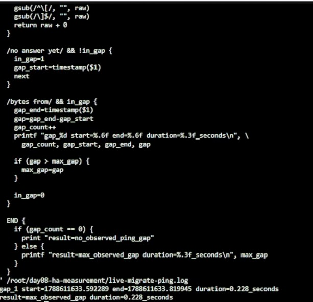
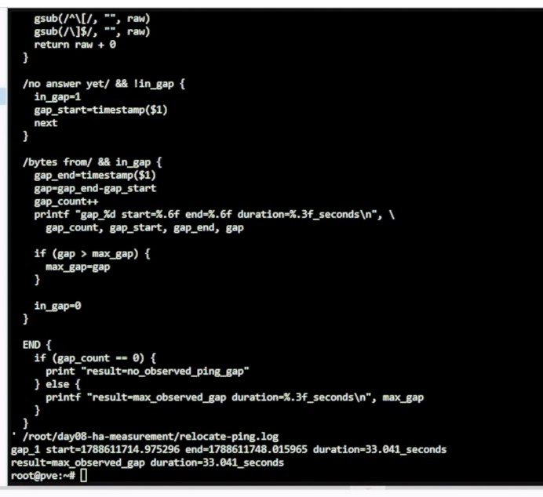
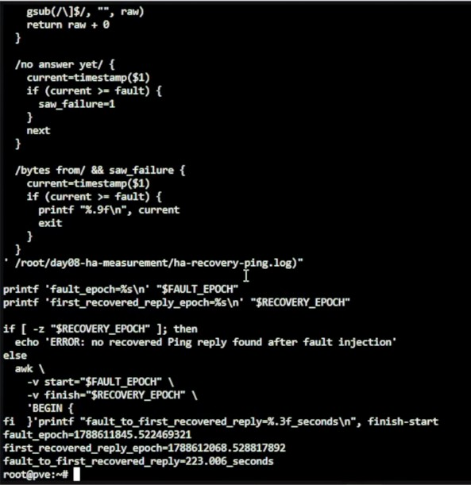
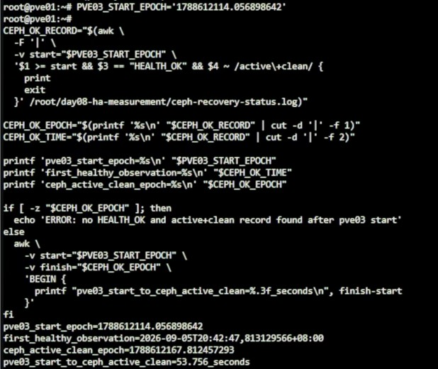

Day 08 額外實作｜PVE Migration、HA Recovery 與 Ceph Recovery 時間量測
對應文章：Day 08｜節點故障後 VM 如何接手：Proxmox VE 遷移、HA 隔離與恢復時間量測
0. 測試前的停止條件
出現以下任一情況時不要注入故障：
pvecm status不是三票且沒有 Quorum。ceph -s不是HEALTH_OK。- 三個 OSD 沒有全部顯示
up、in。 - 測試 VM 的任何必要磁碟仍位於
local-lvm。 - HA Resource 已經進入 Error，或 Request State 不是
started。 - 另一台 Nested PVE、MON 或 OSD 已經離線。
- 無法確定測試 VM 目前位於哪個節點。
- 測試 VM 內含不能丟失的重要資料。
測試過程一次只停止一台 Nested PVE，不使用 pvecm expected 1 改寫投票門檻，也不在 HA Recovery 期間手動啟動同一台測試 VM。
1. 準備四個操作畫面
在瀏覽器開啟四個分頁或四個獨立視窗：
- L0 管理畫面：登入
pve-l0，稍後用來停止與恢復 Nested PVE。 - Cluster 管理畫面：登入不會在本次測試中停止的 pve01、pve02 或 pve03。
- L0 Probe Shell：在
pve-l0開啟Shell，持續 Ping 測試 VM。 - Cluster 觀察 Shell：在存活的 Nested PVE 開啟
Shell，記錄 HA 與 Ceph 狀態。
Cluster 管理畫面不能登入即將停止的節點，否則故障發生後 Web UI 會一起中斷。每次進行節點故障測試前，都要先重新確認測試 VM 的所在節點，再選另一台存活節點作為 Cluster 管理入口。
2. 確認測試 VM 與基準狀態
2.1 從 Web UI 找出測試 VM 所在節點
在 Cluster 管理畫面依序操作：
- 點選左側
Datacenter。 - 點選
HA。 - 開啟
Status。 - 找到
vm:903。 - 記錄目前節點與狀態；狀態必須是
started。
如果實際使用的測試 VM 不是 VMID 903，從這一步開始將所有 903 改成自己的 VMID。
2.2 從 Nested PVE Shell 交叉確認
在任一正常的 Nested PVE 開啟 Shell，執行：
TEST_VMID=903
pvecm status
ha-manager config
ha-manager status
qm config "$TEST_VMID" |
grep -E '^(cpu|net[0-9]+|scsi[0-9]+|virtio[0-9]+|sata[0-9]+|ide[0-9]+|efidisk[0-9]+|tpmstate[0-9]+):'
ceph -s
ceph pg stat
預期結果：
pvecm status顯示Quorate: Yes，三個節點都有一票。ha-manager status顯示vm:903為started，並列出目前節點。- 測試 VM 的系統磁碟、Cloud-Init Drive，以及存在時的 EFI／TPM Disk 都位於
ceph-vm。 ceph -s顯示HEALTH_OK，三個 OSD 都是up、in。ceph pg stat顯示全部 PG 為active+clean。
若 ha-manager config 沒有 vm:903，先回到原本的 Day 08 實作文件完成 HA Resource 與 Affinity Rule，不要在量測途中臨時補建。
2.3 找出測試 VM 的 IPv4 位址
在 Cluster Web UI：
- 從左側選取 VM 903。
- 點選
Summary。 - 在
IP Addresses確認測試 VM 接在vmbr0的 IPv4 位址是192.168.0.169。 - 不要使用
127.0.0.1、IPv6 Link-local 位址或 Nested PVE 本身的管理位址。
如果 Summary 沒有顯示位址，從 VM Console 登入後執行：
ip -4 -br address
本文後續命令固定使用 192.168.0.169。如果 VM 內看到其他位址，先修正 DHCP Reservation 或 VM 網路設定，不要在量測過程中混用不同位址。
2.4 從 L0 確認 Probe 路徑
在 pve-l0 的 Probe Shell 執行：
ping -n -c 5 192.168.0.169
五次都能收到回覆才繼續。測試 VM 由 DHCP 取得位址時，Migration 不會改變它的虛擬網卡 MAC Address，通常會繼續使用同一筆租約；仍應以這一步實際看到的位址為準。
2.5 確認各主機時間可以互相比對
在 L0 與任一正常 Nested PVE 分別執行：
date --iso-8601=ns
timedatectl show \
-p NTPSynchronized \
-p Timezone \
-p LocalRTC
兩邊時間應一致，NTPSynchronized=yes，LocalRTC=no。若時間不同步，先回到 Day 07 的 Chrony 檢查流程；不要用彼此不一致的時間戳計算恢復時間。
3. 將測試 VM 放到固定起點
後續使用固定路徑：Live Migration 從 pve01 到 pve02，Relocate 從 pve02 到 pve03，最後停止承載測試 VM 的 pve03。這樣每個節點、VMID 與目標位置都是確定值。
在 pve01 Shell 完整執行：
mkdir -p /root/day08-ha-measurement
rm -f \
/root/day08-ha-measurement/live-migrate-status.log \
/root/day08-ha-measurement/live-migrate-requested.txt \
/root/day08-ha-measurement/live-migrate-completed.txt
pvecm status
ceph -s
ha-manager status
ha-manager relocate vm:903 pve01
while true; do
CURRENT_STATUS="$(ha-manager status | grep 'service vm:903')"
date --iso-8601=ns
printf '%s\n' "$CURRENT_STATUS"
if printf '%s\n' "$CURRENT_STATUS" |
grep -qE 'service vm:903 \(pve01, started\)'; then
break
fi
sleep 1
done
ping -n -c 5 192.168.0.169
如果 VM 原本就在 pve01，ha-manager relocate 可能回覆不需要移動；只要後面顯示 service vm:903 (pve01, started) 且五次 Ping 全部成功，即可繼續。
4. 測量 Live Migration 中斷時間
4.1 在 L0 啟動獨立 Probe
在 pve-l0 Shell 完整執行：
mkdir -p /root/day08-ha-measurement
rm -f /root/day08-ha-measurement/live-migrate-ping.log
stdbuf -oL ping \
-n \
-D \
-O \
-i 0.2 \
192.168.0.169 2>&1 |
tee /root/day08-ha-measurement/live-migrate-ping.log
畫面持續出現 bytes from 192.168.0.169 後，保持這個 Probe 運作。
4.2 在 pve01 觸發移動並計時
在 pve01 的另一個 Shell 完整執行：
mkdir -p /root/day08-ha-measurement
rm -f \
/root/day08-ha-measurement/live-migrate-status.log \
/root/day08-ha-measurement/live-migrate-requested.txt \
/root/day08-ha-measurement/live-migrate-completed.txt
date --iso-8601=ns |
tee /root/day08-ha-measurement/live-migrate-requested.txt
ha-manager migrate vm:903 pve02
while true; do
CURRENT_TIME="$(date --iso-8601=ns)"
CURRENT_STATUS="$(ha-manager status | grep 'service vm:903')"
printf '%s %s\n' "$CURRENT_TIME" "$CURRENT_STATUS" |
tee -a /root/day08-ha-measurement/live-migrate-status.log
if printf '%s\n' "$CURRENT_STATUS" |
grep -qE 'service vm:903 \(pve02, started\)'; then
date --iso-8601=ns |
tee /root/day08-ha-measurement/live-migrate-completed.txt
break
fi
sleep 1
done
回到 L0 Probe Shell，確認 Ping 已連續正常至少 10 秒，按 Ctrl+C 停止。
4.3 直接計算 Live Migration 的 Ping 中斷
在 pve-l0 Shell 完整執行：
awk '
function timestamp(raw) {
gsub(/^\[/, "", raw)
gsub(/\]$/, "", raw)
return raw + 0
}
/no answer yet/ && !in_gap {
in_gap=1
gap_start=timestamp($1)
next
}
/bytes from/ && in_gap {
gap_end=timestamp($1)
gap=gap_end-gap_start
gap_count++
printf "gap_%d start=%.6f end=%.6f duration=%.3f_seconds\n", \
gap_count, gap_start, gap_end, gap
if (gap > max_gap) {
max_gap=gap
}
in_gap=0
}
END {
if (gap_count == 0) {
print "result=no_observed_ping_gap"
} else {
printf "result=max_observed_gap duration=%.3f_seconds\n", max_gap
}
}
' /root/day08-ha-measurement/live-migrate-ping.log
result=no_observed_ping_gap 表示在 0.2 秒 Probe 間隔內沒有觀察到中斷，不代表絕對零停機。出現一個以上的 Gap 時，最後一行就是本次實驗觀察到的最長中斷。
本次實測得到 result=max_observed_gap duration=0.228_seconds。

圖（一）Live Migration Ping 中斷量測結果。
5. 測量 Relocate 中斷時間
5.1 在 L0 啟動新的 Probe
在 pve-l0 Shell 完整執行：
rm -f /root/day08-ha-measurement/relocate-ping.log
stdbuf -oL ping \
-n \
-D \
-O \
-i 0.2 \
192.168.0.169 2>&1 |
tee /root/day08-ha-measurement/relocate-ping.log
畫面持續出現 bytes from 192.168.0.169 後，保持 Probe 運作。
5.2 在 pve01 觸發 Relocate
第 4 節完成後，VM 903 應位於 pve02。在 pve01 Shell 完整執行：
rm -f \
/root/day08-ha-measurement/relocate-status.log \
/root/day08-ha-measurement/relocate-requested.txt \
/root/day08-ha-measurement/relocate-completed.txt
ha-manager status |
grep 'service vm:903'
date --iso-8601=ns |
tee /root/day08-ha-measurement/relocate-requested.txt
ha-manager relocate vm:903 pve03
while true; do
CURRENT_TIME="$(date --iso-8601=ns)"
CURRENT_STATUS="$(ha-manager status | grep 'service vm:903')"
printf '%s %s\n' "$CURRENT_TIME" "$CURRENT_STATUS" |
tee -a /root/day08-ha-measurement/relocate-status.log
if printf '%s\n' "$CURRENT_STATUS" |
grep -qE 'service vm:903 \(pve03, started\)'; then
date --iso-8601=ns |
tee /root/day08-ha-measurement/relocate-completed.txt
break
fi
sleep 1
done
回到 L0 Probe Shell，確認 Ping 已連續正常至少 10 秒，按 Ctrl+C。
5.3 直接計算 Relocate 的 Ping 中斷
在 pve-l0 Shell 完整執行：
awk '
function timestamp(raw) {
gsub(/^\[/, "", raw)
gsub(/\]$/, "", raw)
return raw + 0
}
/no answer yet/ && !in_gap {
in_gap=1
gap_start=timestamp($1)
next
}
/bytes from/ && in_gap {
gap_end=timestamp($1)
gap=gap_end-gap_start
gap_count++
printf "gap_%d start=%.6f end=%.6f duration=%.3f_seconds\n", \
gap_count, gap_start, gap_end, gap
if (gap > max_gap) {
max_gap=gap
}
in_gap=0
}
END {
if (gap_count == 0) {
print "result=no_observed_ping_gap"
} else {
printf "result=max_observed_gap duration=%.3f_seconds\n", max_gap
}
}
' /root/day08-ha-measurement/relocate-ping.log
這個結果包含 VM 停止、在 pve03 重新啟動與 Guest 網路恢復的時間，不是 Live Migration。
本次實測得到 result=max_observed_gap duration=33.041_seconds。

圖（二）Relocate Ping 中斷量測結果。
6. 測量 pve03 故障後的 HA Recovery
第 5 節完成後，VM 903 固定位於 pve03，因此本節要在 L0 停止的是 VMID 103。
6.1 在 pve01 確認可以安全測試
在 pve01 Shell 完整執行：
pvecm status
ceph -s
ceph pg stat
ha-manager status |
grep 'service vm:903'
只有同時看到 Quorate: Yes、HEALTH_OK、全部 PG 為 active+clean 與 service vm:903 (pve03, started) 時才繼續。
6.2 在 L0 啟動 HA Recovery Probe
在 pve-l0 Shell 完整執行：
rm -f /root/day08-ha-measurement/ha-recovery-ping.log
stdbuf -oL ping \
-n \
-D \
-O \
-i 0.2 \
192.168.0.169 2>&1 |
tee /root/day08-ha-measurement/ha-recovery-ping.log
看到連續回覆後，保持 Probe 運作。
6.3 在 pve01 記錄 HA 與 Ceph 狀態
在 pve01 的另一個 Shell 完整執行：
mkdir -p /root/day08-ha-measurement
rm -f \
/root/day08-ha-measurement/ha-recovery-status.log \
/root/day08-ha-measurement/ceph-recovery-status.log
while true; do
CURRENT_EPOCH="$(date +%s.%N)"
CURRENT_TIME="$(date --iso-8601=ns)"
HA_STATUS="$(ha-manager status | grep 'service vm:903')"
CEPH_HEALTH="$(ceph health)"
CEPH_PG="$(ceph pg stat)"
printf '%s|%s|%s\n' "$CURRENT_EPOCH" "$CURRENT_TIME" "$HA_STATUS" |
tee -a /root/day08-ha-measurement/ha-recovery-status.log
printf '%s|%s|%s|%s\n' \
"$CURRENT_EPOCH" "$CURRENT_TIME" "$CEPH_HEALTH" "$CEPH_PG" |
tee -a /root/day08-ha-measurement/ceph-recovery-status.log
sleep 1
done
先看到 VM 位於 pve03、Ceph 為 HEALTH_OK 後，保持這個紀錄命令運作。
6.4 在 L0 停止 pve03
在 pve-l0 的另一個 Shell 完整執行：
mkdir -p /root/day08-ha-measurement
qm config 103 |
grep '^name:'
qm status 103
date +%s.%N |
tee /root/day08-ha-measurement/ha-fault-injected.epoch
date --iso-8601=ns |
tee /root/day08-ha-measurement/ha-fault-injected.iso
qm stop 103
qm status 103
執行前，qm config 103 必須顯示 name: pve03，qm status 103 必須先顯示 running；停止後必須顯示 stopped。
6.5 等待 VM 自動恢復
不要手動啟動 VM 903。在 pve01 的另一個 Shell 完整執行：
while true; do
CURRENT_TIME="$(date --iso-8601=ns)"
CURRENT_STATUS="$(ha-manager status | grep 'service vm:903')"
printf '%s %s\n' "$CURRENT_TIME" "$CURRENT_STATUS"
if printf '%s\n' "$CURRENT_STATUS" |
grep -qE 'service vm:903 \(pve0[12], started\)'; then
break
fi
sleep 1
done
同時觀察 L0 Probe。Ping 恢復後繼續等待 10 秒，再按 Ctrl+C。pve01 上第 6.3 節的 HA／Ceph 紀錄仍要繼續運作。
6.6 直接計算 HA Recovery 的網路中斷
在 pve-l0 Shell 完整執行：
awk '
function timestamp(raw) {
gsub(/^\[/, "", raw)
gsub(/\]$/, "", raw)
return raw + 0
}
/no answer yet/ && !in_gap {
in_gap=1
gap_start=timestamp($1)
next
}
/bytes from/ && in_gap {
gap_end=timestamp($1)
gap=gap_end-gap_start
gap_count++
printf "gap_%d start=%.6f end=%.6f duration=%.3f_seconds\n", \
gap_count, gap_start, gap_end, gap
if (gap > max_gap) {
max_gap=gap
}
in_gap=0
}
END {
if (gap_count == 0) {
print "result=no_observed_ping_gap"
} else {
printf "result=max_observed_gap duration=%.3f_seconds\n", max_gap
}
}
' /root/day08-ha-measurement/ha-recovery-ping.log
這個結果是從第一次確定沒收到 Ping 回覆，到 VM 在存活節點重新回覆的可觀察中斷。
6.7 計算從故障注入到第一次 Ping 恢復
同樣在 pve-l0 Shell 完整執行：
FAULT_EPOCH="$(cat /root/day08-ha-measurement/ha-fault-injected.epoch)"
RECOVERY_EPOCH="$(awk -v fault="$FAULT_EPOCH" '
function timestamp(raw) {
gsub(/^\[/, "", raw)
gsub(/\]$/, "", raw)
return raw + 0
}
/no answer yet/ {
current=timestamp($1)
if (current >= fault) {
saw_failure=1
}
next
}
/bytes from/ && saw_failure {
current=timestamp($1)
if (current >= fault) {
printf "%.9f\n", current
exit
}
}
' /root/day08-ha-measurement/ha-recovery-ping.log)"
printf 'fault_epoch=%s\n' "$FAULT_EPOCH"
printf 'first_recovered_reply_epoch=%s\n' "$RECOVERY_EPOCH"
if [ -z "$RECOVERY_EPOCH" ]; then
echo 'ERROR: no recovered Ping reply found after fault injection'
else
awk \
-v start="$FAULT_EPOCH" \
-v finish="$RECOVERY_EPOCH" \
'BEGIN {
printf "fault_to_first_recovered_reply=%.3f_seconds\n", finish-start
}'
fi
這個數字包含 HA 偵測節點故障、Fencing／重新指派、VM 啟動與 Guest 網路恢復。
本次從關閉 pve03 到 VM 首次恢復 Ping 共 223.006 秒；從第一筆未回覆到首次恢復回覆的可觀察中斷為 222.170 秒。正文採用前者，因為它以明確的故障注入時間為起點。

圖（三）HA Recovery 從故障注入到 Ping 恢復的量測結果。
7. 恢復 pve03 並測量 Ceph 恢復時間
7.1 在 L0 啟動 pve03 並記錄時間
在 pve-l0 Shell 完整執行：
date +%s.%N |
tee /root/day08-ha-measurement/pve03-started.epoch
date --iso-8601=ns |
tee /root/day08-ha-measurement/pve03-started.iso
qm start 103
qm status 103
cat /root/day08-ha-measurement/pve03-started.epoch
cat /root/day08-ha-measurement/pve03-started.iso
保留畫面中的 pve03-started.epoch 數值，第 7.3 節會直接用它計算。
7.2 在 pve01 等到 Ceph 完整恢復
第 6.3 節的記錄 Shell 繼續運作。在 pve01 另開一個 Shell，每秒自動檢查是否已完整恢復：
while true; do
CURRENT_TIME="$(date --iso-8601=ns)"
CEPH_HEALTH="$(ceph health)"
CEPH_PG="$(ceph pg stat)"
printf '%s %s %s\n' \
"$CURRENT_TIME" "$CEPH_HEALTH" "$CEPH_PG"
if [ "$CEPH_HEALTH" = 'HEALTH_OK' ] &&
printf '%s\n' "$CEPH_PG" |
grep -q 'active+clean'; then
break
fi
sleep 1
done
命令自動結束後，在第 6.3 節的紀錄 Shell 按 Ctrl+C。然後在 pve01 執行完整驗證：
pvecm status
ceph -s
ceph pg stat
ceph mon stat
ceph osd tree
ha-manager status |
grep 'service vm:903'
必須看到三個 PVE 節點恢復 Quorum、三個 MON 在 Quorum、三個 OSD 全部 up/in、HEALTH_OK、全部 PG 為 active+clean，且 VM 903 維持 started。
7.3 計算 pve03 啟動到 Ceph 恢復的時間
pve03-started.epoch 在 L0，Ceph 的每筆觀察時間已寫入 pve01 的 ceph-recovery-status.log。在 pve01 執行下列完整命令，只將第一行右側的數字替換為 L0 剛才顯示的 pve03-started.epoch：
PVE03_START_EPOCH='1788600000.000000000'
CEPH_OK_RECORD="$(awk \
-F '|' \
-v start="$PVE03_START_EPOCH" \
'$1 >= start && $3 == "HEALTH_OK" && $4 ~ /active\+clean/ {
print
exit
}' /root/day08-ha-measurement/ceph-recovery-status.log)"
CEPH_OK_EPOCH="$(printf '%s\n' "$CEPH_OK_RECORD" | cut -d '|' -f 1)"
CEPH_OK_TIME="$(printf '%s\n' "$CEPH_OK_RECORD" | cut -d '|' -f 2)"
printf 'pve03_start_epoch=%s\n' "$PVE03_START_EPOCH"
printf 'first_healthy_observation=%s\n' "$CEPH_OK_TIME"
printf 'ceph_active_clean_epoch=%s\n' "$CEPH_OK_EPOCH"
if [ -z "$CEPH_OK_EPOCH" ]; then
echo 'ERROR: no HEALTH_OK and active+clean record found after pve03 start'
else
awk \
-v start="$PVE03_START_EPOCH" \
-v finish="$CEPH_OK_EPOCH" \
'BEGIN {
printf "pve03_start_to_ceph_active_clean=%.3f_seconds\n", finish-start
}'
fi
兩台主機必須已通過 NTP 同步，這個跨主機時間差才可以使用。
本次從啟動 pve03 到 Ceph 同時符合 HEALTH_OK 與全部 PG 為 active+clean，共 53.756 秒。PG 在 43.790 秒時已全部回到 active+clean，其後仍短暫存在 pve03 的時鐘偏差告警，因此完整健康時間採用 53.756 秒。

圖（四）Ceph 從 pve03 啟動到恢復健康的量測結果。
8. 最後完整驗證
在 pve01 完整執行：
pvecm status
ceph -s
ceph pg stat
ceph osd tree
ha-manager config
ha-manager status
ping -n -c 5 192.168.0.169
在 pve-l0 完整執行：
qm status 101
qm status 102
qm status 103
grep -H -E \
'packets transmitted|packet loss' \
/root/day08-ha-measurement/*-ping.log
最後整理四個實測數字：
| 欄位 | 實測值 |
|---|---|
| Live Migration 最長可觀察 Ping 中斷 | 0.228 秒 |
| Relocate 最長可觀察 Ping 中斷 | 33.041 秒 |
| 停止 pve03 到 VM 第一次恢復回覆 | 223.006 秒 |
| 啟動 pve03 到 Ceph 回到完整健康 | 53.756 秒 |
Live Migration／Relocate 的 Ping 中斷、故障注入到 VM 回覆，以及 Ceph 完整恢復是不同指標，不要相加成單一數字。
9. 測試失敗時如何安全收尾
如果 VM 長時間沒有在其他節點恢復：
- 不要停止第二台 Nested PVE。
- 不要執行
pvecm expected 1。 - 不要手動複製或移動
/etc/pve/nodes/.../qemu-server/903.conf。 - 先在 L0 恢復 VMID 103，也就是 pve03。
- 等待 Cluster 回到三票 Quorum。
- 等待 Ceph 回到
HEALTH_OK與active+clean。 - 再保存以下診斷資料：
在 pve-l0 Shell 完整執行：
qm config 103 |
grep '^name:'
qm status 103
qm start 103
qm status 103
qm config 103 必須顯示 name: pve03。如果 pve03 本來就已經是 running，不要再執行第二次 Start。
在 pve01 Shell 等待節點重新加入，然後完整執行：
pvecm status
ha-manager status
ceph -s
ceph pg stat
journalctl \
-u pve-ha-crm \
-u pve-ha-lrm \
--since '-30 min' \
-o short-iso-precise \
--no-pager
完成診斷前不要再次注入故障。
小結
本額外實作詳細測量了在 Nested PVE 環境下 HA Migration 與 Recovery 的真實中斷時間。數據顯示 Live Migration 的中斷極短，而節點非預期失效後的 HA Recovery 則需要數分鐘才能完全恢復虛擬機與 Ceph 儲存的健康狀態。此基準可作為後續調優或架構設計的參考。